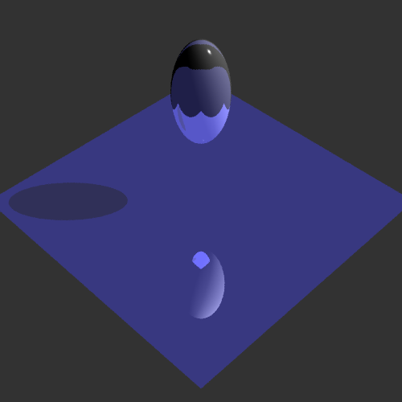
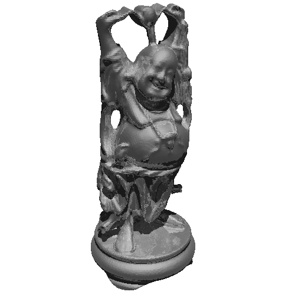

test.ray, 4.29 seconds
First version: Local transformation and bounding volume information ignored
First version: Texture coordinates ignored
First version: Texture coordinates ignored
First version: Only ambient and emissive properties calculated
Second version: Diffuse and specular contributions from light sources added
Second version: Local transformations taken into account
Second version: Reflected color contributions added

dog.ray, 26.30 seconds

bunny.ray, 31.10 seconds
Third version: Refracted color contributions added, but refraction indices ignored
Fourth version: Refraction indices taken into account
Fourth version: Bounding boxes ordered and tested before shapes intersected
Second version: Texture coordinates taken into account
Second version: Texture coordinates taken into account

test.ray, 29.58 seconds, 8 jittered rays per pixel (note smooth edges)
The scene below contains a pure red directional light, a pure blue point light, and a pure green spotlight. All other intermediate color values are derived from the combination of these three light sources.

lights.ray, 38.03 seconds
Example: Walls of nc5rk.art.1.gif
Example: Columns of nc5rk.art.1.gif
I think I've found a problem with line 773 of the provided geometry.cpp, which deals with matrix-ray multiplication. Take the sphere from the provided test.ray for example. Translation along the y-axis by 2.5 units is specified; the inverse transpose of the sphere's transformation matrix then has a bottom row of [0, -2.5, 0, 1]. Line 773 inexplicably calculates the fourth homogeneous coordinate t by simply summing these bottom-row entries. This means that t will be positive or negative depending on whether the translation amount is less than or greater than 1, which has serious implications: any RayGroup transformed with this matrix will have correct normals on one half of an arbitrary plane and backwards normals on the other side!
{kind=link}
I initially discovered this effect when I tried decreasing the translation amount specified in test.ray. Half of the resultant ellipsoid appeared correct while the other half was pitch black, due to reversed normals (whose directions I manually checked with generous amounts of std::cout). I've confirmed this behavior with a classmate, Raymond Tang, who was able to reproduce the anomaly with his ray tracer. My workaround was to disregard the t value by altering line 774 to return q instead of q/t.
{kind=link}

I wrote the script monticello.py to generate a 50-frame sequence with varying camera locations and directions. I used the Beier-Neeley morph feature of Assignment 1 to morph the rendered scene into the nickel and photo images. The entire animation contains 100 distinct frames, each separated by 40 milliseconds.
See monticello.ray, which was used to create the final three-quarter portrait frame of nc5rk.art.1.gif.
The provided buddha.ray file contains 318416 triangles and was traced in 113.64 seconds with recursion depth 5:

{kind=link}